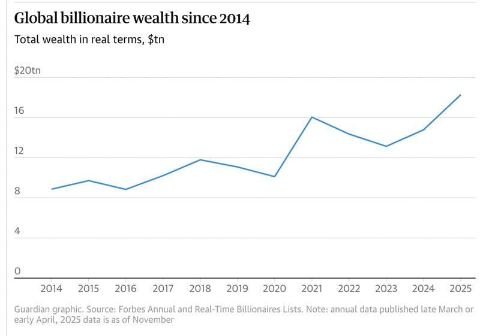
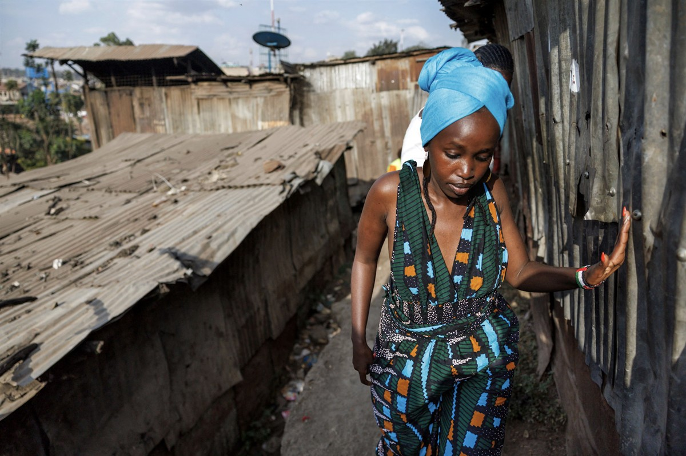
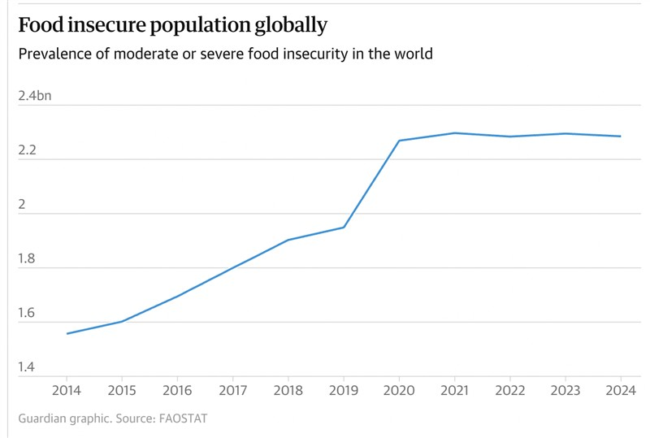

A climate justice protest at the World Economic Forum in Davos, where participating corporations were accused of fuelling crises and profiting from them. Photograph: Dpa/Alamy
ON SOURCE: THE GUARDIAN
Mon 19 Jan 2026 00.01 GMT
‘Brazen’ political influence of rich laid bare as wealth of billionaires reaches $18.3tn, says Oxfam
Governments opting for oligarchy while brutally repressing protests over austerity and lack of jobs, charity report says
The world saw a record number of billionaires created last year, with a collective wealth of $18.3tn (£13.7tn), while global efforts stalled in the fight against poverty and hunger.
Oxfam’s annual survey of global inequality has revealed that the number of billionaires surpassed 3,000 for the first time during 2025. Since 2020, their collective wealth grew by 81%, or $8.2tn, which the charity claims would be enough to eradicate global poverty 26 times over.
But the authors reported that most governments were failing ordinary people by capitulating to the increasingly blatant influence of the rich.

The past 12 months have seen youth-led uprisings against inequality across countries in Africa, Asia and Latin America. But protests over corruption, austerity, unemployment and high living costs have routinely been ignored and instead harshly put down by governments, said Max Lawson, co-author of the report.
“Governments worldwide are making the wrong choice; choosing to defend wealth, not freedom. Choosing the rule of the rich. Choosing to repress their people’s anger at how life is becoming unaffordable and unbearable, rather than redistributing wealth from the richest to the rest,” said Lawson.

Social justice activist Wanjira Wanjiru in Nairobi’s Mathare slum. ‘When people are oppressed, they always rebel.’ Photograph: Tony Karumba/AFP/Getty Images
“The economically rich are becoming politically rich the world over, able to shape and influence politics, societies and economies,” he said. “In the past, rich people were perhaps more coy about pulling the levers of power, but it’s becoming more and more brazen, this kind of marriage between money and politics.”
In Kenya, the social activist Wanjira Wanjiru said the effects of inequality were most apparent where she worked in Mathare, a slum in Nairobi where many people lacked access to clean water and sanitation facilities but where an adjacent golf club had sprinklers constantly running to maintain the greens and fairways.

She said the Kenyan government had capitulated to the wealthy in east Africa by imposing austerity measures on education and healthcare, while businesses received tax exemptions.
But Wanjiru remained optimistic about there being a backlash against this trend, with younger people, especially those from developing countries, successfully rising up to challenge the influence of the rich over politics, as Kenyans have in protests last year and in 2024.
“I’m actually hopeful because the natural reaction will be to force systems to work for the people. We are getting to a point where we really can’t take it any more,” said Wanjiru. “When people are oppressed, they always rebel.”
Business and politics mix as leading tech tycoons (from left) Mark Zuckerberg, Lauren Sanchez, Jeff Bezos, Sundar Pichai and Elon Musk attend Donald Trump’s inauguration. Photograph: Getty
Nepal saw just such an uprising in September 2025, with several days of protests driven by anger over corruption leading to the unseating of the government.
Among the targets of that anger was Binod Chaudhary, Nepal’s only billionaire and a member of parliament whose businesses and properties were burned down.
Pradip Gyawali, a Nepali political consultant who took part in the protests, said: “There were so many cases of politicians taking money from businessmen to work in their favour. We protested against them because the ordinary people had to work so hard for little reward [while the rich benefited].
“[Our protest] was a message that this is a new revolution, not only in our country but the whole world, that the youth should have their say and some power in politics.”
Lawson and his co-author, Harry Bignell, said the rich were more open than ever about using wealth for political influence, in part through control over the media but also by taking office themselves or through donating to political campaigns.
Their research estimated that billionaires were 4,000 times more likely than an ordinary person to hold political office, while more than half of the world’s media companies and nine of the top 10 social media platforms are owned by billionaires.
According to Oxfam, research from the US has shown that if the rich support a policy, it has a 45% chance of being adopted compared with an 18% chance if they oppose it.
ON SOURCE: THE GUARDIAN